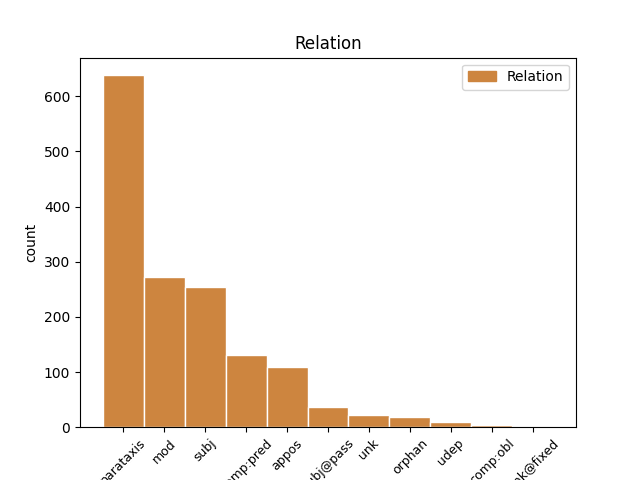
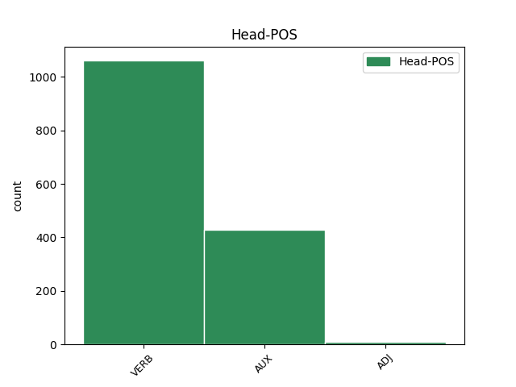
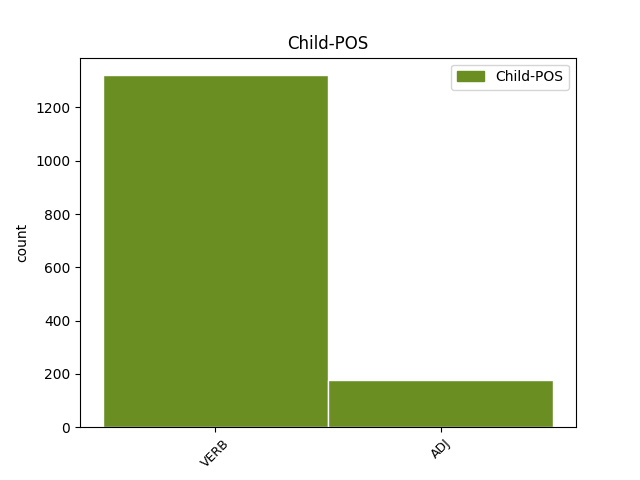

Distribution of features within this leaf



Agreement Rules sorted by frequency.
- When the dependent token is the parataxis(parataxis) of the head token, and the dependent token is VERB.
1 Manévr _ _ _ _ 0 _ _ _
2 zmenšuje zmenšovat VERB VB-S---3P-AA--- Aspect=Imp|Mood=Ind|Number=Sing|Person=3|Polarity=Pos|Tense=Pres|VerbForm=Fin|Voice=Act 0 _ _ _
3 riziko _ _ _ _ 0 _ _ _
4 rozbití _ _ _ _ 0 _ _ _
5 planetky _ _ _ _ 0 _ _ _
6 na _ _ _ _ 0 _ _ _
7 více _ _ _ _ 0 _ _ _
8 kusů _ _ _ _ 0 _ _ _
9 , _ _ _ _ 0 _ _ _
10 ale _ _ _ _ 0 _ _ _
11 současně _ _ _ _ 0 _ _ _
12 zvyšuje zvyšovat VERB VB-S---3P-AA--- Aspect=Imp|Mood=Ind|Number=Sing|Person=3|Polarity=Pos|Tense=Pres|VerbForm=Fin|Voice=Act 2 parataxis _ _
13 energetickou _ _ _ _ 0 _ _ _
14 náročnost _ _ _ _ 0 _ _ _
15 " _ _ _ _ 0 _ _ _
16 úpravy _ _ _ _ 0 _ _ _
17 " _ _ _ _ 0 _ _ _
18 dráhy _ _ _ _ 0 _ _ _
19 zhruba _ _ _ _ 0 _ _ _
20 o _ _ _ _ 0 _ _ _
21 dva _ _ _ _ 0 _ _ _
22 řády _ _ _ _ 0 _ _ _
23 , _ _ _ _ 0 _ _ _
24 čili _ _ _ _ 0 _ _ _
25 jsme _ _ _ _ 0 _ _ _
26 opět _ _ _ _ 0 _ _ _
27 u _ _ _ _ 0 _ _ _
28 100 _ _ _ _ 0 _ _ _
29 Mt _ _ _ _ 0 _ _ _
30 TNT _ _ _ _ 0 _ _ _
31 ! _ _ _ _ 0 _ _ _
1 Oči _ _ _ _ 0 _ _ _
2 proto _ _ _ _ 0 _ _ _
3 , _ _ _ _ 0 _ _ _
4 že _ _ _ _ 0 _ _ _
5 nadbytek _ _ _ _ 0 _ _ _
6 kyslíku _ _ _ _ 0 _ _ _
7 při _ _ _ _ 0 _ _ _
8 oživování _ _ _ _ 0 _ _ _
9 novorozenců _ _ _ _ 0 _ _ _
10 brzdí brzdit VERB VB-S---3P-AA--- Aspect=Imp|Mood=Ind|Number=Sing|Person=3|Polarity=Pos|Tense=Pres|VerbForm=Fin|Voice=Act 0 _ _ _
11 vývoj _ _ _ _ 0 _ _ _
12 cév _ _ _ _ 0 _ _ _
13 v _ _ _ _ 0 _ _ _
14 sítnici _ _ _ _ 0 _ _ _
15 oka _ _ _ _ 0 _ _ _
16 : _ _ _ _ 0 _ _ _
17 cévy _ _ _ _ 0 _ _ _
18 se _ _ _ _ 0 _ _ _
19 nemusí muset VERB VB-P---3P-NA--1 Mood=Ind|Number=Plur|Person=3|Polarity=Neg|Tense=Pres|VerbForm=Fin|Voice=Act 10 mod _ _
20 tolik _ _ _ _ 0 _ _ _
21 tvořit _ _ _ _ 0 _ _ _
22 , _ _ _ _ 0 _ _ _
23 aby _ _ _ _ 0 _ _ _
24 by _ _ _ _ 0 _ _ _
25 prokrvení _ _ _ _ 0 _ _ _
26 sítnice _ _ _ _ 0 _ _ _
27 zajistily _ _ _ _ 0 _ _ _
28 . _ _ _ _ 0 _ _ _
1 Každého _ _ _ _ 0 _ _ _
2 asi _ _ _ _ 0 _ _ _
3 napadne napadnout VERB VB-S---3P-AA--- Aspect=Perf|Mood=Ind|Number=Sing|Person=3|Polarity=Pos|Tense=Pres|VerbForm=Fin|Voice=Act 0 _ _ _
4 : _ _ _ _ 0 _ _ _
5 jak _ _ _ _ 0 _ _ _
6 vzniká vznikat VERB VB-S---3P-AA--- Aspect=Imp|Mood=Ind|Number=Sing|Person=3|Polarity=Pos|Tense=Pres|VerbForm=Fin|Voice=Act 3 subj _ _
7 věda _ _ _ _ 0 _ _ _
8 , _ _ _ _ 0 _ _ _
9 je _ _ _ _ 0 _ _ _
10 - _ _ _ _ 0 _ _ _
11 li _ _ _ _ 0 _ _ _
12 metoda _ _ _ _ 0 _ _ _
13 indukce _ _ _ _ 0 _ _ _
14 zavržena _ _ _ _ 0 _ _ _
15 ? _ _ _ _ 0 _ _ _
1 Manévr _ _ _ _ 0 _ _ _
2 zmenšuje _ _ _ _ 0 _ _ _
3 riziko _ _ _ _ 0 _ _ _
4 rozbití _ _ _ _ 0 _ _ _
5 planetky _ _ _ _ 0 _ _ _
6 na _ _ _ _ 0 _ _ _
7 více _ _ _ _ 0 _ _ _
8 kusů _ _ _ _ 0 _ _ _
9 , _ _ _ _ 0 _ _ _
10 ale _ _ _ _ 0 _ _ _
11 současně _ _ _ _ 0 _ _ _
12 zvyšuje zvyšovat VERB VB-S---3P-AA--- Aspect=Imp|Mood=Ind|Number=Sing|Person=3|Polarity=Pos|Tense=Pres|VerbForm=Fin|Voice=Act 0 _ _ _
13 energetickou _ _ _ _ 0 _ _ _
14 náročnost _ _ _ _ 0 _ _ _
15 " _ _ _ _ 0 _ _ _
16 úpravy _ _ _ _ 0 _ _ _
17 " _ _ _ _ 0 _ _ _
18 dráhy _ _ _ _ 0 _ _ _
19 zhruba _ _ _ _ 0 _ _ _
20 o _ _ _ _ 0 _ _ _
21 dva _ _ _ _ 0 _ _ _
22 řády _ _ _ _ 0 _ _ _
23 , _ _ _ _ 0 _ _ _
24 čili _ _ _ _ 0 _ _ _
25 jsme být VERB VB-P---1P-AA--- Mood=Ind|Number=Plur|Person=1|Polarity=Pos|Tense=Pres|VerbForm=Fin|Voice=Act 12 appos _ _
26 opět _ _ _ _ 0 _ _ _
27 u _ _ _ _ 0 _ _ _
28 100 _ _ _ _ 0 _ _ _
29 Mt _ _ _ _ 0 _ _ _
30 TNT _ _ _ _ 0 _ _ _
31 ! _ _ _ _ 0 _ _ _
1 Jen _ _ _ _ 0 _ _ _
2 některé _ _ _ _ 0 _ _ _
3 kysličníky _ _ _ _ 0 _ _ _
4 ( _ _ _ _ 0 _ _ _
5 tedy _ _ _ _ 0 _ _ _
6 dnes _ _ _ _ 0 _ _ _
7 oxidy _ _ _ _ 0 _ _ _
8 ) _ _ _ _ 0 _ _ _
9 však _ _ _ _ 0 _ _ _
10 dávají _ _ _ _ 0 _ _ _
11 s _ _ _ _ 0 _ _ _
12 vodou _ _ _ _ 0 _ _ _
13 vznik _ _ _ _ 0 _ _ _
14 kyselinám _ _ _ _ 0 _ _ _
15 , _ _ _ _ 0 _ _ _
16 jsou být AUX VB-P---3P-AA--- Mood=Ind|Number=Plur|Person=3|Polarity=Pos|Tense=Pres|VerbForm=Fin|Voice=Act 0 _ _ _
17 " _ _ _ _ 0 _ _ _
18 okyselující okyselující ADJ AGFP1-----A---- Aspect=Imp|Case=Nom|Gender=Fem|Number=Plur|Polarity=Pos|Tense=Pres|VerbForm=Part|Voice=Act 16 comp:pred _ LDeriv=okyselovat|SpaceAfter=No
19 " _ _ _ _ 0 _ _ _
20 . _ _ _ _ 0 _ _ _
1 Mimo _ _ _ _ 0 _ _ _
2 něho _ _ _ _ 0 _ _ _
3 , _ _ _ _ 0 _ _ _
4 každý _ _ _ _ 0 _ _ _
5 jiný _ _ _ _ 0 _ _ _
6 pracující pracující ADJ AGMS1-----A---- Animacy=Anim|Aspect=Imp|Case=Nom|Gender=Masc|Number=Sing|Polarity=Pos|Tense=Pres|VerbForm=Part|Voice=Act 7 subj _ LDeriv=pracovat
7 může moci VERB VB-S---3P-AA--- Mood=Ind|Number=Sing|Person=3|Polarity=Pos|Tense=Pres|VerbForm=Fin|Voice=Act 0 _ _ _
8 složit _ _ _ _ 0 _ _ _
9 ruce _ _ _ _ 0 _ _ _
10 v _ _ _ _ 0 _ _ _
11 klín _ _ _ _ 0 _ _ _
12 a _ _ _ _ 0 _ _ _
13 říci _ _ _ _ 0 _ _ _
14 , _ _ _ _ 0 _ _ _
15 aniž _ _ _ _ 0 _ _ _
16 by _ _ _ _ 0 _ _ _
17 lhal _ _ _ _ 0 _ _ _
18 : _ _ _ _ 0 _ _ _
19 Nyní _ _ _ _ 0 _ _ _
20 nepracuji _ _ _ _ 0 _ _ _
21 ! _ _ _ _ 0 _ _ _
1 Dnes _ _ _ _ 0 _ _ _
2 se _ _ _ _ 0 _ _ _
3 již _ _ _ _ 0 _ _ _
4 ví vědět VERB VB-S---3P-AA--- Mood=Ind|Number=Sing|Person=3|Polarity=Pos|Tense=Pres|VerbForm=Fin|Voice=Act 0 _ _ _
5 , _ _ _ _ 0 _ _ _
6 odkud _ _ _ _ 0 _ _ _
7 nové _ _ _ _ 0 _ _ _
8 buňky _ _ _ _ 0 _ _ _
9 pocházejí pocházet VERB VB-P---3P-AA--- Aspect=Imp|Mood=Ind|Number=Plur|Person=3|Polarity=Pos|Tense=Pres|VerbForm=Fin|Voice=Act 4 subj@pass _ SpaceAfter=No
10 . _ _ _ _ 0 _ _ _
1 " _ _ _ _ 0 _ _ _
2 . _ _ _ _ 0 _ _ _
3 . _ _ _ _ 0 _ _ _
4 . _ _ _ _ 0 _ _ _
5 tyto _ _ _ _ 0 _ _ _
6 poznatky _ _ _ _ 0 _ _ _
7 mi _ _ _ _ 0 _ _ _
8 ukázaly _ _ _ _ 0 _ _ _
9 , _ _ _ _ 0 _ _ _
10 že _ _ _ _ 0 _ _ _
11 je _ _ _ _ 0 _ _ _
12 možno _ _ _ _ 0 _ _ _
13 dojíti _ _ _ _ 0 _ _ _
14 znalostí _ _ _ _ 0 _ _ _
15 v _ _ _ _ 0 _ _ _
16 životě _ _ _ _ 0 _ _ _
17 velmi _ _ _ _ 0 _ _ _
18 užitečných _ _ _ _ 0 _ _ _
19 a _ _ _ _ 0 _ _ _
20 že _ _ _ _ 0 _ _ _
21 místo _ _ _ _ 0 _ _ _
22 oné _ _ _ _ 0 _ _ _
23 spekulativní _ _ _ _ 0 _ _ _
24 filosofie _ _ _ _ 0 _ _ _
25 , _ _ _ _ 0 _ _ _
26 jíž _ _ _ _ 0 _ _ _
27 se _ _ _ _ 0 _ _ _
28 vyučuje _ _ _ _ 0 _ _ _
29 ve _ _ _ _ 0 _ _ _
30 školách _ _ _ _ 0 _ _ _
31 , _ _ _ _ 0 _ _ _
32 možno _ _ _ _ 0 _ _ _
33 nalézti _ _ _ _ 0 _ _ _
34 jinou _ _ _ _ 0 _ _ _
35 , _ _ _ _ 0 _ _ _
36 praktickou _ _ _ _ 0 _ _ _
37 , _ _ _ _ 0 _ _ _
38 jejíž _ _ _ _ 0 _ _ _
39 pomocí _ _ _ _ 0 _ _ _
40 poznajíce poznat VERB VmXP------A---4 Aspect=Perf|Number=Plur|Polarity=Pos|Style=Arch|Tense=Past|VerbForm=Conv|Voice=Act 68 comp:pred _ _
41 sílu _ _ _ _ 0 _ _ _
42 a _ _ _ _ 0 _ _ _
43 působnost _ _ _ _ 0 _ _ _
44 ohně _ _ _ _ 0 _ _ _
45 , _ _ _ _ 0 _ _ _
46 vody _ _ _ _ 0 _ _ _
47 , _ _ _ _ 0 _ _ _
48 hvězd _ _ _ _ 0 _ _ _
49 a _ _ _ _ 0 _ _ _
50 oblohy _ _ _ _ 0 _ _ _
51 a _ _ _ _ 0 _ _ _
52 všech _ _ _ _ 0 _ _ _
53 ostatních _ _ _ _ 0 _ _ _
54 těles _ _ _ _ 0 _ _ _
55 nás _ _ _ _ 0 _ _ _
56 obklopujících _ _ _ _ 0 _ _ _
57 , _ _ _ _ 0 _ _ _
58 tak _ _ _ _ 0 _ _ _
59 zřetelně _ _ _ _ 0 _ _ _
60 , _ _ _ _ 0 _ _ _
61 jako _ _ _ _ 0 _ _ _
62 známe _ _ _ _ 0 _ _ _
63 rozličná _ _ _ _ 0 _ _ _
64 zaměstnání _ _ _ _ 0 _ _ _
65 svých _ _ _ _ 0 _ _ _
66 řemeslníků _ _ _ _ 0 _ _ _
67 , _ _ _ _ 0 _ _ _
68 mohli moci VERB VpMP---XR-AA--- Animacy=Anim|Gender=Masc|Number=Plur|Polarity=Pos|Tense=Past|VerbForm=Part|Voice=Act 0 _ _ _
69 bychom _ _ _ _ 0 _ _ _
70 všeho _ _ _ _ 0 _ _ _
71 toho _ _ _ _ 0 _ _ _
72 použít _ _ _ _ 0 _ _ _
73 stejným _ _ _ _ 0 _ _ _
74 způsobem _ _ _ _ 0 _ _ _
75 ke _ _ _ _ 0 _ _ _
76 všem _ _ _ _ 0 _ _ _
77 účelům _ _ _ _ 0 _ _ _
78 , _ _ _ _ 0 _ _ _
79 pro _ _ _ _ 0 _ _ _
80 jež _ _ _ _ 0 _ _ _
81 se _ _ _ _ 0 _ _ _
82 to _ _ _ _ 0 _ _ _
83 hodí _ _ _ _ 0 _ _ _
84 , _ _ _ _ 0 _ _ _
85 a _ _ _ _ 0 _ _ _
86 státi _ _ _ _ 0 _ _ _
87 se _ _ _ _ 0 _ _ _
88 tak _ _ _ _ 0 _ _ _
89 jakoby _ _ _ _ 0 _ _ _
90 pány _ _ _ _ 0 _ _ _
91 a _ _ _ _ 0 _ _ _
92 vládci _ _ _ _ 0 _ _ _
93 přírody _ _ _ _ 0 _ _ _
94 . _ _ _ _ 0 _ _ _
1 Japonské _ _ _ _ 0 _ _ _
2 ministerstvo _ _ _ _ 0 _ _ _
3 zdravotnictví _ _ _ _ 0 _ _ _
4 je _ _ _ _ 0 _ _ _
5 tímto _ _ _ _ 0 _ _ _
6 narůstajícím _ _ _ _ 0 _ _ _
7 problémem _ _ _ _ 0 _ _ _
8 zneklidněno _ _ _ _ 0 _ _ _
9 ( _ _ _ _ 0 _ _ _
10 úřední _ _ _ _ 0 _ _ _
11 údaje _ _ _ _ 0 _ _ _
12 mluví _ _ _ _ 0 _ _ _
13 o _ _ _ _ 0 _ _ _
14 110 _ _ _ _ 0 _ _ _
15 takových _ _ _ _ 0 _ _ _
16 úmrtích _ _ _ _ 0 _ _ _
17 od _ _ _ _ 0 _ _ _
18 r _ _ _ _ 0 _ _ _
19 . _ _ _ _ 0 _ _ _
20 1980 _ _ _ _ 0 _ _ _
21 , _ _ _ _ 0 _ _ _
22 ale _ _ _ _ 0 _ _ _
23 odhady _ _ _ _ 0 _ _ _
24 jsou _ _ _ _ 0 _ _ _
25 až _ _ _ _ 0 _ _ _
26 10000 _ _ _ _ 0 _ _ _
27 ) _ _ _ _ 0 _ _ _
28 a _ _ _ _ 0 _ _ _
29 letoškem _ _ _ _ 0 _ _ _
30 počínaje počínat VERB VeYS------A---- Aspect=Imp|Gender=Masc|Number=Sing|Polarity=Pos|Tense=Pres|VerbForm=Conv|Voice=Act 31 unk _ _
31 zřizuje zřizovat VERB VB-S---3P-AA--- Aspect=Imp|Mood=Ind|Number=Sing|Person=3|Polarity=Pos|Tense=Pres|VerbForm=Fin|Voice=Act 0 _ _ _
32 50 _ _ _ _ 0 _ _ _
33 lokálních _ _ _ _ 0 _ _ _
34 a _ _ _ _ 0 _ _ _
35 6 _ _ _ _ 0 _ _ _
36 prefektuálních _ _ _ _ 0 _ _ _
37 center _ _ _ _ 0 _ _ _
38 , _ _ _ _ 0 _ _ _
39 která _ _ _ _ 0 _ _ _
40 se _ _ _ _ 0 _ _ _
41 na _ _ _ _ 0 _ _ _
42 tento _ _ _ _ 0 _ _ _
43 jev _ _ _ _ 0 _ _ _
44 mají _ _ _ _ 0 _ _ _
45 zaměřit _ _ _ _ 0 _ _ _
46 ( _ _ _ _ 0 _ _ _
47 s _ _ _ _ 0 _ _ _
48 uvolněnou _ _ _ _ 0 _ _ _
49 částkou _ _ _ _ 0 _ _ _
50 rovnající _ _ _ _ 0 _ _ _
51 se _ _ _ _ 0 _ _ _
52 10 _ _ _ _ 0 _ _ _
53 miliónům _ _ _ _ 0 _ _ _
54 ( _ _ _ _ 0 _ _ _
55 britských _ _ _ _ 0 _ _ _
56 ) _ _ _ _ 0 _ _ _
57 liber _ _ _ _ 0 _ _ _
58 ) _ _ _ _ 0 _ _ _
59 . _ _ _ _ 0 _ _ _
1 Ne _ _ _ _ 0 _ _ _
2 že _ _ _ _ 0 _ _ _
3 by _ _ _ _ 0 _ _ _
4 geologové _ _ _ _ 0 _ _ _
5 do _ _ _ _ 0 _ _ _
6 jednoho _ _ _ _ 0 _ _ _
7 tvrdili tvrdit VERB VpMP---XR-AA--- Animacy=Anim|Aspect=Imp|Gender=Masc|Number=Plur|Polarity=Pos|Tense=Past|VerbForm=Part|Voice=Act 0 _ _ _
8 že _ _ _ _ 0 _ _ _
9 na _ _ _ _ 0 _ _ _
10 hranicích _ _ _ _ 0 _ _ _
11 geologických _ _ _ _ 0 _ _ _
12 období _ _ _ _ 0 _ _ _
13 šlo _ _ _ _ 0 _ _ _
14 o _ _ _ _ 0 _ _ _
15 srážky _ _ _ _ 0 _ _ _
16 Země _ _ _ _ 0 _ _ _
17 s _ _ _ _ 0 _ _ _
18 kosmickými _ _ _ _ 0 _ _ _
19 tělesy _ _ _ _ 0 _ _ _
20 , _ _ _ _ 0 _ _ _
21 ale _ _ _ _ 0 _ _ _
22 při _ _ _ _ 0 _ _ _
23 vší _ _ _ _ 0 _ _ _
24 darwinistické _ _ _ _ 0 _ _ _
25 evoluční _ _ _ _ 0 _ _ _
26 umíněnosti _ _ _ _ 0 _ _ _
27 a _ _ _ _ 0 _ _ _
28 používání _ _ _ _ 0 _ _ _
29 aktualistického _ _ _ _ 0 _ _ _
30 principu _ _ _ _ 0 _ _ _
31 definovali definovat VERB VpMP---XR-AA--- Animacy=Anim|Gender=Masc|Number=Plur|Polarity=Pos|Tense=Past|VerbForm=Part|Voice=Act 7 orphan _ _
32 hranice _ _ _ _ 0 _ _ _
33 mezi _ _ _ _ 0 _ _ _
34 geologickými _ _ _ _ 0 _ _ _
35 útvary _ _ _ _ 0 _ _ _
36 na _ _ _ _ 0 _ _ _
37 pozorováních _ _ _ _ 0 _ _ _
38 , _ _ _ _ 0 _ _ _
39 že _ _ _ _ 0 _ _ _
40 vyhynula _ _ _ _ 0 _ _ _
41 velká _ _ _ _ 0 _ _ _
42 společenství _ _ _ _ 0 _ _ _
43 živočichů _ _ _ _ 0 _ _ _
44 . _ _ _ _ 0 _ _ _
1 Počínaje počínat VERB VeYS------A---- Aspect=Imp|Gender=Masc|Number=Sing|Polarity=Pos|Tense=Pres|VerbForm=Conv|Voice=Act 7 udep _ _
2 sedmým _ _ _ _ 0 _ _ _
3 týdnem _ _ _ _ 0 _ _ _
4 po _ _ _ _ 0 _ _ _
5 narození _ _ _ _ 0 _ _ _
6 pečlivě _ _ _ _ 0 _ _ _
7 prohlíží prohlížet VERB VB-S---3P-AA--- Aspect=Imp|Mood=Ind|Number=Sing|Person=3|Polarity=Pos|Tense=Pres|VerbForm=Fin|Voice=Act 0 _ _ _
8 tvář _ _ _ _ 0 _ _ _
9 člověka _ _ _ _ 0 _ _ _
10 , _ _ _ _ 0 _ _ _
11 který _ _ _ _ 0 _ _ _
12 o _ _ _ _ 0 _ _ _
13 něj _ _ _ _ 0 _ _ _
14 pečuje _ _ _ _ 0 _ _ _
15 , _ _ _ _ 0 _ _ _
16 a _ _ _ _ 0 _ _ _
17 pak _ _ _ _ 0 _ _ _
18 odpoví _ _ _ _ 0 _ _ _
19 výrazem _ _ _ _ 0 _ _ _
20 hodnoceným _ _ _ _ 0 _ _ _
21 jako _ _ _ _ 0 _ _ _
22 úsměv _ _ _ _ 0 _ _ _
23 - _ _ _ _ 0 _ _ _
24 není _ _ _ _ 0 _ _ _
25 známo _ _ _ _ 0 _ _ _
26 , _ _ _ _ 0 _ _ _
27 co _ _ _ _ 0 _ _ _
28 přitom _ _ _ _ 0 _ _ _
29 prožívá _ _ _ _ 0 _ _ _
30 . _ _ _ _ 0 _ _ _
1 Čím _ _ _ _ 0 _ _ _
2 více _ _ _ _ 0 _ _ _
3 člověk _ _ _ _ 0 _ _ _
4 tyto _ _ _ _ 0 _ _ _
5 zdroje _ _ _ _ 0 _ _ _
6 zneužívá _ _ _ _ 0 _ _ _
7 , _ _ _ _ 0 _ _ _
8 tím _ _ _ _ 0 _ _ _
9 více _ _ _ _ 0 _ _ _
10 rostou _ _ _ _ 0 _ _ _
11 jeho _ _ _ _ 0 _ _ _
12 egoistické _ _ _ _ 0 _ _ _
13 tendence _ _ _ _ 0 _ _ _
14 a _ _ _ _ 0 _ _ _
15 najednou _ _ _ _ 0 _ _ _
16 zde _ _ _ _ 0 _ _ _
17 stojí stát VERB VB-S---3P-AA--- Mood=Ind|Number=Sing|Person=3|Polarity=Pos|Tense=Pres|VerbForm=Fin|Voice=Act 0 _ _ _
18 představitel _ _ _ _ 0 _ _ _
19 naší _ _ _ _ 0 _ _ _
20 doby _ _ _ _ 0 _ _ _
21 , _ _ _ _ 0 _ _ _
22 snažící snažící ADJ AGMS1-----A---- Animacy=Anim|Aspect=Imp|Case=Nom|Gender=Masc|Number=Sing|Polarity=Pos|Tense=Pres|VerbForm=Part|Voice=Act 17 mod _ LDeriv=snažit
23 se _ _ _ _ 0 _ _ _
24 vše _ _ _ _ 0 _ _ _
25 objektivně _ _ _ _ 0 _ _ _
26 poznat _ _ _ _ 0 _ _ _
27 , _ _ _ _ 0 _ _ _
28 obsáhnout _ _ _ _ 0 _ _ _
29 , _ _ _ _ 0 _ _ _
30 shromažďovat _ _ _ _ 0 _ _ _
31 , _ _ _ _ 0 _ _ _
32 využít _ _ _ _ 0 _ _ _
33 ; _ _ _ _ 0 _ _ _
1 Chyby _ _ _ _ 0 _ _ _
2 se _ _ _ _ 0 _ _ _
3 však _ _ _ _ 0 _ _ _
4 nedopustí _ _ _ _ 0 _ _ _
5 , _ _ _ _ 0 _ _ _
6 když _ _ _ _ 0 _ _ _
7 prodávajícímu prodávající ADJ AGMS3-----A---- Animacy=Anim|Aspect=Imp|Case=Dat|Gender=Masc|Number=Sing|Polarity=Pos|Tense=Pres|VerbForm=Part|Voice=Act 8 comp:obl _ LDeriv=prodat
8 sdělí sdělit VERB VB-S---3P-AA--- Aspect=Perf|Mood=Ind|Number=Sing|Person=3|Polarity=Pos|Tense=Pres|VerbForm=Fin|Voice=Act 0 _ _ _
9 výslovně _ _ _ _ 0 _ _ _
10 , _ _ _ _ 0 _ _ _
11 že _ _ _ _ 0 _ _ _
12 zboží _ _ _ _ 0 _ _ _
13 odmítá _ _ _ _ 0 _ _ _
14 . _ _ _ _ 0 _ _ _
1 Vysloví _ _ _ _ 0 _ _ _
2 - _ _ _ _ 0 _ _ _
3 li _ _ _ _ 0 _ _ _
4 se _ _ _ _ 0 _ _ _
5 hierarchie _ _ _ _ 0 _ _ _
6 v _ _ _ _ 0 _ _ _
7 této _ _ _ _ 0 _ _ _
8 záležitosti _ _ _ _ 0 _ _ _
9 , _ _ _ _ 0 _ _ _
10 bude _ _ _ _ 0 _ _ _
11 chtíc chtít VERB VeHS------A---- Aspect=Imp|Gender=Fem,Neut|Number=Sing|Polarity=Pos|Tense=Pres|VerbForm=Conv|Voice=Act 0 _ _ _
12 nechtíc chtít VERB VeHS------N---- Aspect=Imp|Gender=Fem,Neut|Number=Sing|Polarity=Neg|Tense=Pres|VerbForm=Conv|Voice=Act 11 unk@fixed _ _
13 podporovat _ _ _ _ 0 _ _ _
14 odpůrce _ _ _ _ 0 _ _ _
15 rozšířeného _ _ _ _ 0 _ _ _
16 zákona _ _ _ _ 0 _ _ _
17 o _ _ _ _ 0 _ _ _
18 potratech _ _ _ _ 0 _ _ _
19 . _ _ _ _ 0 _ _ _
1 Někteří _ _ _ _ 0 _ _ _
2 ministři _ _ _ _ 0 _ _ _
3 již _ _ _ _ 0 _ _ _
4 podepsali _ _ _ _ 0 _ _ _
5 cirkulář _ _ _ _ 0 _ _ _
6 včera _ _ _ _ 0 _ _ _
7 , _ _ _ _ 0 _ _ _
8 zbývající zbývající ADJ AGMP1-----A---- Animacy=Anim|Aspect=Imp|Case=Nom|Gender=Masc|Number=Plur|Polarity=Pos|Tense=Pres|VerbForm=Part|Voice=Act 10 unk _ LDeriv=zbývat
9 se _ _ _ _ 0 _ _ _
10 připojí připojit VERB VB-P---3P-AA--- Aspect=Perf|Mood=Ind|Number=Plur|Person=3|Polarity=Pos|Tense=Pres|VerbForm=Fin|Voice=Act 0 _ _ _
11 patrně _ _ _ _ 0 _ _ _
12 ještě _ _ _ _ 0 _ _ _
13 dnes _ _ _ _ 0 _ _ _
14 . _ _ _ _ 0 _ _ _
Disagree Examples:
1 Jak _ _ _ _ 0 _ _ _
2 konstatoval konstatovat VERB VpYS---XR-AA--- Gender=Masc|Number=Sing|Polarity=Pos|Tense=Past|VerbForm=Part|Voice=Act 8 parataxis _ _
3 premiér _ _ _ _ 0 _ _ _
4 Václav _ _ _ _ 0 _ _ _
5 Klaus _ _ _ _ 0 _ _ _
6 , _ _ _ _ 0 _ _ _
7 vláda _ _ _ _ 0 _ _ _
8 nevidí vidět VERB VB-S---3P-NA--- Mood=Ind|Number=Sing|Person=3|Polarity=Neg|Tense=Pres|VerbForm=Fin|Voice=Act 0 _ _ _
9 žádné _ _ _ _ 0 _ _ _
10 důvody _ _ _ _ 0 _ _ _
11 k _ _ _ _ 0 _ _ _
12 umělému _ _ _ _ 0 _ _ _
13 urychlování _ _ _ _ 0 _ _ _
14 či _ _ _ _ 0 _ _ _
15 zpomalování _ _ _ _ 0 _ _ _
16 bankrotů _ _ _ _ 0 _ _ _
17 . _ _ _ _ 0 _ _ _
1 Platí _ _ _ _ 0 _ _ _
2 jednoduchá _ _ _ _ 0 _ _ _
3 rovnice _ _ _ _ 0 _ _ _
4 : _ _ _ _ 0 _ _ _
5 Čím _ _ _ _ 0 _ _ _
6 větší _ _ _ _ 0 _ _ _
7 obtíže _ _ _ _ 0 _ _ _
8 budou být AUX VB-P---3F-AA--- Mood=Ind|Number=Plur|Person=3|Polarity=Pos|Tense=Fut|VerbForm=Fin|Voice=Act 0 _ _ _
9 mít _ _ _ _ 0 _ _ _
10 naši _ _ _ _ 0 _ _ _
11 klienti _ _ _ _ 0 _ _ _
12 ( _ _ _ _ 0 _ _ _
13 a _ _ _ _ 0 _ _ _
14 to _ _ _ _ 0 _ _ _
15 se _ _ _ _ 0 _ _ _
16 samozřejmě _ _ _ _ 0 _ _ _
17 netýká týkat VERB VB-S---3P-NA--- Aspect=Imp|Mood=Ind|Number=Sing|Person=3|Polarity=Neg|Tense=Pres|VerbForm=Fin|Voice=Act 8 parataxis _ _
18 jen _ _ _ _ 0 _ _ _
19 zemědělců _ _ _ _ 0 _ _ _
20 , _ _ _ _ 0 _ _ _
21 ale _ _ _ _ 0 _ _ _
22 všech _ _ _ _ 0 _ _ _
23 ) _ _ _ _ 0 _ _ _
24 , _ _ _ _ 0 _ _ _
25 s _ _ _ _ 0 _ _ _
26 tím _ _ _ _ 0 _ _ _
27 vyššími _ _ _ _ 0 _ _ _
28 vyvolanými _ _ _ _ 0 _ _ _
29 náklady _ _ _ _ 0 _ _ _
30 bychom _ _ _ _ 0 _ _ _
31 se _ _ _ _ 0 _ _ _
32 museli _ _ _ _ 0 _ _ _
33 jako _ _ _ _ 0 _ _ _
34 jejich _ _ _ _ 0 _ _ _
35 věřitel _ _ _ _ 0 _ _ _
36 potýkat _ _ _ _ 0 _ _ _
37 . _ _ _ _ 0 _ _ _
1 Jak _ _ _ _ 0 _ _ _
2 trefně _ _ _ _ 0 _ _ _
3 poznamenal poznamenat VERB VpYS---XR-AA--- Aspect=Perf|Gender=Masc|Number=Sing|Polarity=Pos|Tense=Past|VerbForm=Part|Voice=Act 10 parataxis _ _
4 jeden _ _ _ _ 0 _ _ _
5 z _ _ _ _ 0 _ _ _
6 členů _ _ _ _ 0 _ _ _
7 našeho _ _ _ _ 0 _ _ _
8 výboru _ _ _ _ 0 _ _ _
9 , _ _ _ _ 0 _ _ _
10 je být AUX VB-S---3P-AA--- Mood=Ind|Number=Sing|Person=3|Polarity=Pos|Tense=Pres|VerbForm=Fin|Voice=Act 0 _ _ _
11 citovaná _ _ _ _ 0 _ _ _
12 vyhláška _ _ _ _ 0 _ _ _
13 ve _ _ _ _ 0 _ _ _
14 své _ _ _ _ 0 _ _ _
15 podstatě _ _ _ _ 0 _ _ _
16 podobná _ _ _ _ 0 _ _ _
17 vyhlášce _ _ _ _ 0 _ _ _
18 mobilizační _ _ _ _ 0 _ _ _
19 . _ _ _ _ 0 _ _ _
1 Zjistil _ _ _ _ 0 _ _ _
2 , _ _ _ _ 0 _ _ _
3 že _ _ _ _ 0 _ _ _
4 noví _ _ _ _ 0 _ _ _
5 majitelé _ _ _ _ 0 _ _ _
6 vykopali _ _ _ _ 0 _ _ _
7 tanky _ _ _ _ 0 _ _ _
8 na _ _ _ _ 0 _ _ _
9 naftu _ _ _ _ 0 _ _ _
10 , _ _ _ _ 0 _ _ _
11 které _ _ _ _ 0 _ _ _
12 propouštěly _ _ _ _ 0 _ _ _
13 , _ _ _ _ 0 _ _ _
14 plochy _ _ _ _ 0 _ _ _
15 vyasfaltovali _ _ _ _ 0 _ _ _
16 , _ _ _ _ 0 _ _ _
17 zbourali _ _ _ _ 0 _ _ _
18 komín _ _ _ _ 0 _ _ _
19 , _ _ _ _ 0 _ _ _
20 zapojili zapojit VERB VpMP---XR-AA--- Animacy=Anim|Aspect=Perf|Gender=Masc|Number=Plur|Polarity=Pos|Tense=Past|VerbForm=Part|Voice=Act 0 _ _ _
21 lakovnu _ _ _ _ 0 _ _ _
22 na _ _ _ _ 0 _ _ _
23 topení _ _ _ _ 0 _ _ _
24 ze _ _ _ _ 0 _ _ _
25 sousední _ _ _ _ 0 _ _ _
26 chemičky _ _ _ _ 0 _ _ _
27 ( _ _ _ _ 0 _ _ _
28 akrylátovým _ _ _ _ 0 _ _ _
29 barvám _ _ _ _ 0 _ _ _
30 stačí stačit VERB VB-S---3P-AA--- Aspect=Imp|Mood=Ind|Number=Sing|Person=3|Polarity=Pos|Tense=Pres|VerbForm=Fin|Voice=Act 20 parataxis _ _
31 teplota _ _ _ _ 0 _ _ _
32 30 _ _ _ _ 0 _ _ _
33 ° _ _ _ _ 0 _ _ _
34 C _ _ _ _ 0 _ _ _
35 ) _ _ _ _ 0 _ _ _
36 , _ _ _ _ 0 _ _ _
37 vyměnili _ _ _ _ 0 _ _ _
38 filtraci _ _ _ _ 0 _ _ _
39 . _ _ _ _ 0 _ _ _
1 Soudní _ _ _ _ 0 _ _ _
2 spory _ _ _ _ 0 _ _ _
3 vznikají _ _ _ _ 0 _ _ _
4 také _ _ _ _ 0 _ _ _
5 kvůli _ _ _ _ 0 _ _ _
6 tomu _ _ _ _ 0 _ _ _
7 , _ _ _ _ 0 _ _ _
8 že _ _ _ _ 0 _ _ _
9 se _ _ _ _ 0 _ _ _
10 ministerstvu _ _ _ _ 0 _ _ _
11 " _ _ _ _ 0 _ _ _
12 podařilo _ _ _ _ 0 _ _ _
13 " _ _ _ _ 0 _ _ _
14 vydražit _ _ _ _ 0 _ _ _
15 majetek _ _ _ _ 0 _ _ _
16 obecní _ _ _ _ 0 _ _ _
17 buď _ _ _ _ 0 _ _ _
18 ještě _ _ _ _ 0 _ _ _
19 před _ _ _ _ 0 _ _ _
20 účinností _ _ _ _ 0 _ _ _
21 zákona _ _ _ _ 0 _ _ _
22 172 _ _ _ _ 0 _ _ _
23 / _ _ _ _ 0 _ _ _
24 1991 _ _ _ _ 0 _ _ _
25 Sb _ _ _ _ 0 _ _ _
26 . _ _ _ _ 0 _ _ _
27 , _ _ _ _ 0 _ _ _
28 nebo _ _ _ _ 0 _ _ _
29 když _ _ _ _ 0 _ _ _
30 podniky _ _ _ _ 0 _ _ _
31 daly _ _ _ _ 0 _ _ _
32 do _ _ _ _ 0 _ _ _
33 privatizace _ _ _ _ 0 _ _ _
34 majetek _ _ _ _ 0 _ _ _
35 , _ _ _ _ 0 _ _ _
36 u _ _ _ _ 0 _ _ _
37 kterého _ _ _ _ 0 _ _ _
38 nebylo být AUX VpNS---XR-NA--- Gender=Neut|Number=Sing|Polarity=Neg|Tense=Past|VerbForm=Part|Voice=Act 0 _ _ _
39 důsledně _ _ _ _ 0 _ _ _
40 zjišťováno _ _ _ _ 0 _ _ _
41 , _ _ _ _ 0 _ _ _
42 komu _ _ _ _ 0 _ _ _
43 patří patřit VERB VB-S---3P-AA--- Aspect=Imp|Mood=Ind|Number=Sing|Person=3|Polarity=Pos|Tense=Pres|VerbForm=Fin|Voice=Act 38 subj@pass _ SpaceAfter=No
44 . _ _ _ _ 0 _ _ _